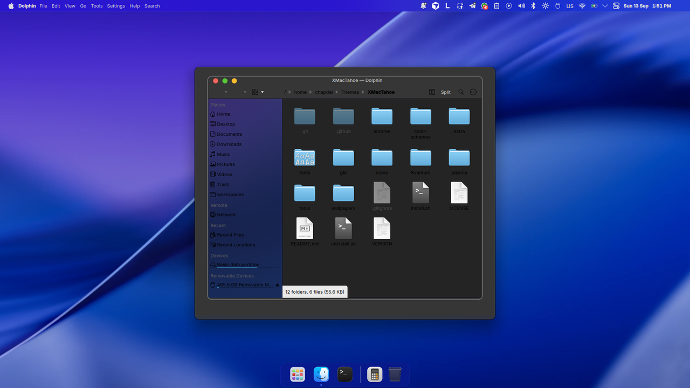
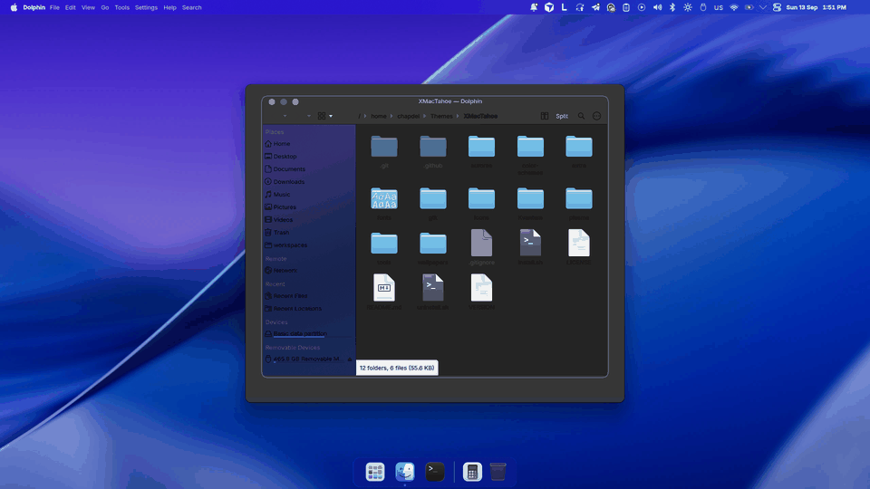
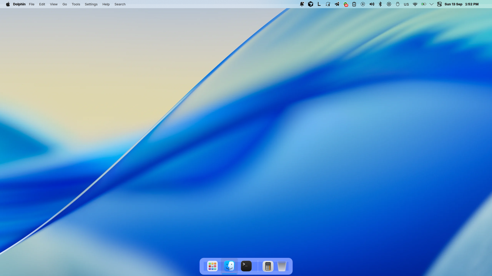

XMacTahoe
A self-contained macOS Tahoe-style global theme for KDE Plasma 6. One command installs everything; one command removes it.
Download the latest release GitHub
Glass menu bar and dock
Nearly transparent 24 px bar with blur and contrast, floating dock, SF Symbols-style tray glyphs.
Rounded corners everywhere
Every window, maximized ones included, through the KDE Rounded Corners effect.
Real light/dark switching
Plasma, Kvantum, GTK, libadwaita, icons and terminal follow one toggle. Optional sunrise/sunset mode and eight-slot dynamic wallpaper.
Whole desktop
Apple menu, control center, Tahoe lock screen, splash and Plymouth boot, Finder-like Dolphin, Terminal.app-like Konsole, Xcode-like Kate, Firefox theme, Flatpak overrides.
Safe to try
Restore point before install, xmactahoe doctor, package checker with CI, full uninstaller.
Configurable
Accent colors, alternative wallpapers, glass and motion toggles, --update.

Install (Fedora 44 / Plasma 6.7)
tar -xzf XMacTahoe-vX.Y.Z.tar.gz && cd XMacTahoe ./install.sh --layout # everything, panels included ./install.sh --root # optional: all users, login screen, Plymouth
Everyday: xmactahoe light|dark|accent purple|glass off|auto on|dynamic on|doctor|update|restore
